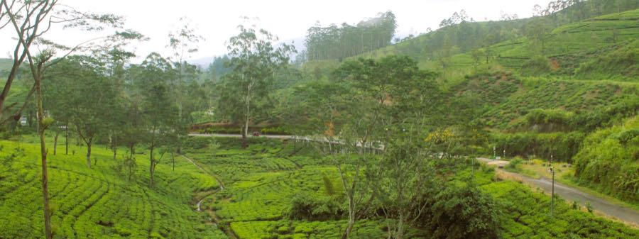
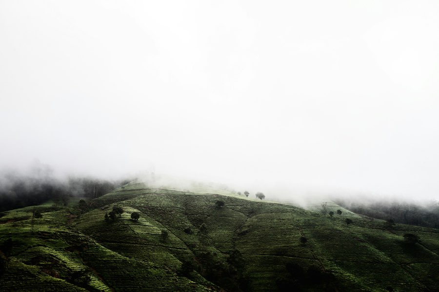
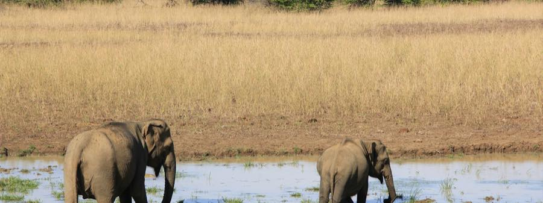
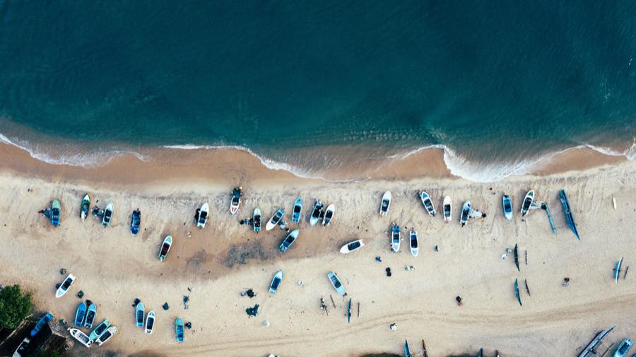

Sri Lanka, door to door
Sri Lanka transfer routes
Fixed-price private transfers on the island's most-travelled roads — and a shared seat where we run one. Pick a route for the price, the distance and what the drive is like.
- 44 routes
- Fixed prices
- 5.0 on Tripadvisor
- Fully insured & safe drivers
- AC cars & vans
- Free cancellation 24h before
- WhatsApp support 7 days
Most booked
Where most trips start

From Colombo Airport (CMB)
7 routes- →Colombo city Approx. 35 km · 50 min from $29
- →Ella Approx. 335 km · 5h from $140
- →Galle Approx. 155 km · 2h 15m from $67
- →Kandy Approx. 120 km · 3h from $49.99
- →Mirissa Approx. 175 km · 2h 30m from $77
- →Negombo Approx. 7 km · 20 min from $29
- →Sigiriya / DambullaShared seat $27.49 Approx. 150 km · 3h 15m from $67

From Colombo city
4 routesFrom Negombo
3 routesFrom Kandy
6 routesFrom Sigiriya / Dambulla
3 routes
From Nuwara Eliya
2 routes
From Ella
8 routes- →Arugam Bay Approx. 135 km · 3h from $59
- →Colombo Airport (CMB) Approx. 335 km · 5h from $140
- →Colombo city Approx. 315 km · 5h from $132
- →Galle Approx. 200 km · 3h 15m from $85
- →Kandy Approx. 135 km · 3h 45m from $59.99
- →Mirissa Approx. 175 km · 3h from $75
- →Nuwara Eliya Approx. 55 km · 1h 45m from $29
- →YalaShared seat $22.99 Approx. 125 km · 3h 15m from $55

From Galle
4 routes
From Mirissa
4 routes
From Yala
2 routes
From Arugam Bay
1 routeGoing somewhere that isn't listed?
These are the roads we drive most. We price any two points in Sri Lanka, door to door — or string several stops into one trip.